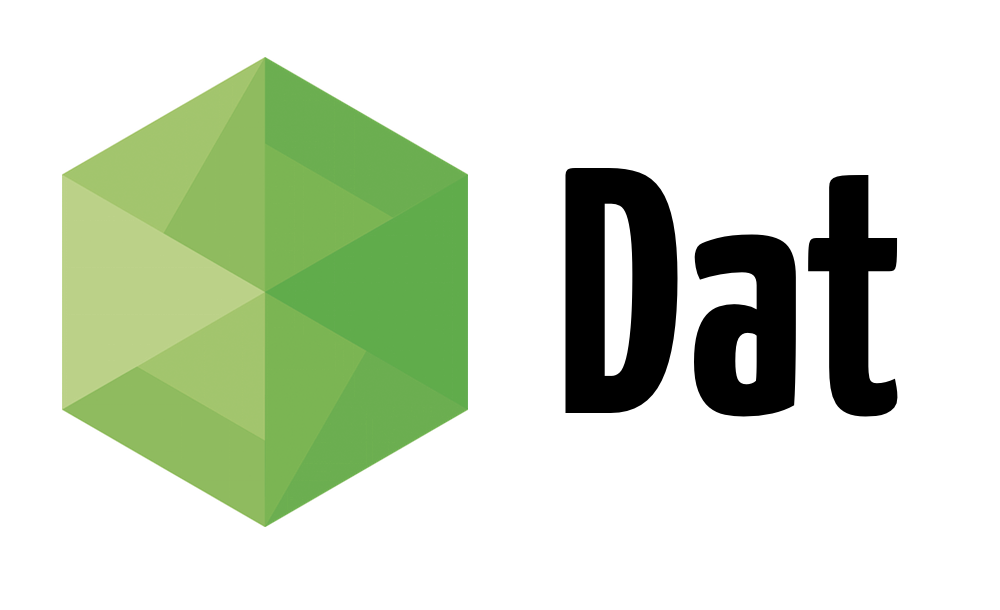
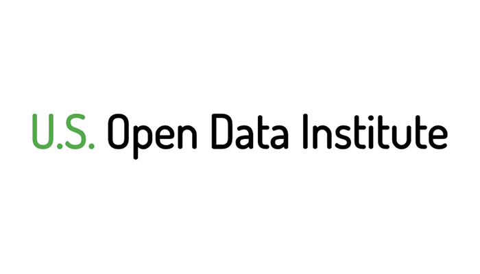
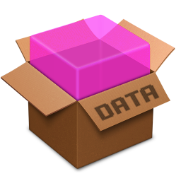
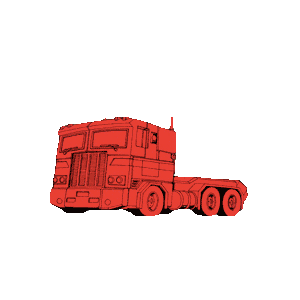
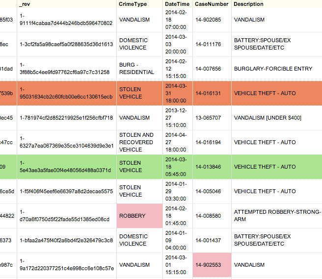
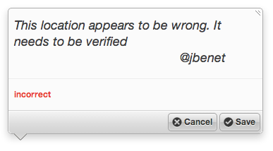

class: center, middle  --- <div style="height: 200px"> </div> .green.center.large[ working with data should be easy ] --- <div style="height: 200px"> </div> .green.center.large[ working with data should be easy ] <div style="padding-left: 100px;"> .middle[ - find - download - use - store - modify - version - publish - annotate ] </div> --- class: center, middle <img src="http://www.knightfoundation.org/media/uploads/project_rotator_images/max-640.jpg.640x360_q85_crop.jpg" /> --- class: center, middle <img src="img/dat-team.png" width="100%" /> .small[[(dat-data.com/team.html)](http://dat-data.com/team.html)] --- class: center, middle, sponsors # .light[Sponsored and Supported by]  --- # What's Dat? --- # What's Dat? ## dat tool open source tool for sharing and versioning large datasets --- # What's Dat? ## dat tool open source tool for sharing and versioning large datasets ## Dat Project open source tools that enable collaboration on large datasets --- class: middle, center  --- class: unix-tools # .light[tools:] unix style .green[ - small pieces, loosely joined - do one thing well - pipes, streams ] --- class: unix-tools # .light[tools:] unix style .green[ - small pieces, loosely joined - do one thing well - pipes, streams ]  --- class: middle, center <img src="img/npm.png" /> --- # .light[tools:] dat - low level utility for versioning and syncing datasets - millions or billions of rows* - distributed, push and pull - be fast! - .green[designed to be built upon] - .orange[git : code :: dat : data] --- # .light[tools:] dat - low level utility for versioning and syncing datasets - millions or billions of rows* - distributed, push and pull - be fast! - .green[designed to be built upon] - .orange[git : code :: dat : data] <iframe width="560" height="315" src="//www.youtube.com/embed/tP_6N7mMKok?t=9" frameborder="0" allowfullscreen></iframe> --- # .light[tools:] .transformers[transformer] - universal data conversion - module library of types + conversions - .red[`convert('from_any_format', 'to_any_format')`] - unix pipes  --- # .light[tools:] .transformers[transformer] - universal data conversion - module library of types + conversions - .red[`convert('from_any_format', 'to_any_format')`] - unix pipes ``` > cat addresses.csv 1150 Masonic Ave, San Francisco, CA 498 Walsh Rd, Atheton, CA 101 University Ave, Palo Alto, CA ... > cat addresses.csv | transform us-street-address us-zipcode > zipcodes.csv 94117 94027 94303 ... ``` ``` > dat cat 'address' | transform us-street-address us-zipcode | dat import > dat transform address -- us-street-address us-zipcode ``` .small[([transform.datadex.io/](http://transform.datadex.io/))] --- # .light[tools:] dat web ui - web frontend to a dat instance - explore the data - run visualizations - manipulate the data - js console .small[([oaklandcrime.dathub.org](http://oaklandcrime.dathub.org))] <iframe src="http://oaklandcrime.dathub.org/" width="100%" height="60%"></iframe> --- # .light[tools: dat web ui] modules! - transformer - mapbox editor - d3 visualizations - .green[annotations!] --- # .light[tools:] datadex - dataset package manager / registry / index - incentivize data publishing + reduce friction - linked data: package.jsonld - .green[data repository - permanent*] - .orange[npm : code :: datadex : data] ``` > datadex get cifar.matlab ... Downloaded datadex.io/ghinton/cifar.numpy > cd cifar > cat data.mat | transform matlab numpy > data.npy > rm data.mat > datadex publish cifar-matlab ... Published to datadex.io/jbenet/cifar.numpy ``` <img src="http://jbenet.static.s3.amazonaws.com/51cd6a8/data-flap.png" style="position: absolute; bottom: 0px; right: 0px; width: 30%; opacity: 0.5;" /> --- .small[([datadex.io/jbenet/cifar-100](http://datadex.io/jbenet/cifar-100))] <iframe src="http://datadex.io/jbenet/cifar-100/" width="100%" height="100%"></iframe> --- ## .light[tools:] dat-annotate ? - versioned annotations - annotate other datasets - visualize annotations  